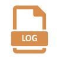

{{ $js:= resources.Get "js/neoforge.js" }}
<script src="{{ $js.RelPermalink }}"></script>
<div id="filelist">
  <div class="fileinfo">
    <div class="fileinfo__header">
      <i aria-hidden="true"></i><b>Download (Latest)</b><br />
      <small></small><br />
    </div>
    <div class="fileinfo__body">
      <div class="link link-boosted">
        <a href="${installerUrl}" title="Installer...">
          
          <br /><span>Latest <em>NeoForge</em> Installer</span>
          <p id="file-name">forge--installer.jar</p></a
        >
      </div>
      <div class="link">
        <a href="${changelogUrl}" title="Changelog...">
          
          <br /><span>Latest Changelog</span><br /><span></span
        ></a>
      </div>
      <div class="link">
        <a
          href="https://maven.neoforged.net/#/releases/net/neoforged/forge"
          title="Older Versions..."
        >
          
          <br /><span>Older Versions -></span></a
        >
      </div>
    </div>
  </div>
</div>
<script>
  document.addEventListener("readystatechange", evt=>{
      if (evt.target.readyState === "complete") {
          loadLatestVersions([{{ .Get 0 }}]);
      }
  });
</script>
